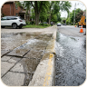

Public Incident Registry
Community Reports & Fixes
Open incident feed in Jakarta and surrounding urban regions. Public visitors
may browse; sign in to interact.
All issues (6)
Roads & Transit
Water & Sewage
Street Lighting
Sanitation & Waste
Public Parks & Trees
Noise & Disturbance
Building & Zoning
Status:

In review
CMP-2026-8841
PAM clean drinking water pipeline burst
flooding sidewalk in front of Cipete Raya MRT
Jl. Fatmawati Raya No. 42 (depan Stasiun MRT Cipete Raya)
2 proof
Oct 29
.png)
Assigned
CMP-2026-8819
Severe 15cm asphalt cavity in TransJakarta
corridor causing motorbike rim damage
Jl. Gatot Subroto Kav. 38 (depan Menara Mulia, Jalur TransJakarta)
1 proof
Oct 28
.png)
Resolved
CMP-2026-8794
Complete PJU streetlight outage spanning
300 meters along residential corridor
Jl. Tebet Barat Dalam Raya No. 24, RT 08 / RW 03
1 proof
Oct 28
.png)
In review
CMP-2026-8720
Illegal household trash accumulation
obstructing drainage at Kali Krukut Kemang
Kampung Kemang, RT 02 / RW 01 (bantara Kali Krukut)
1 proof
Oct 29
.png)
Assigned
CMP-2026-8650
Hazardous decayed Trembesi tree limb
at risk of collapse over walking path
Taman Suropati (sisi timur, dekat patung ASEAN)
1 proof
Oct 28
Submitted
CMP-2026-8601
Heavy excavation equipment operating
past 22:00 WIB in residential alley
Jl. Senopati No. 18, RT 06 / RW 02
1 proof
Oct 29